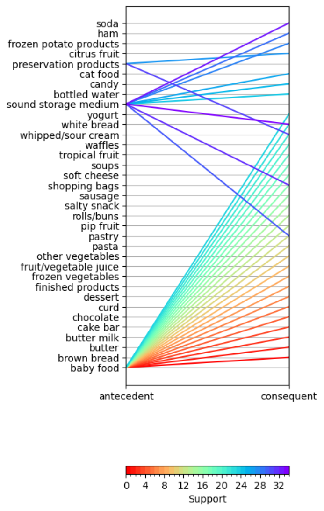

Python Projects
Cohort Analysis
Cohort Analysis is a powerful tool for marketers to gain insights into how different groups of customer behave over time.
It is an analysis that divides customers into groups based on when they first started using a product or service and then tracks behavior over time.
This analysis uses the popular Online Retail dataset available from UCI's machine learning repository but with my own twist, combining two years' worth of data.

RFM Analysis
RFM Analysis is customer segmentation by Recency, Frequency, and Monetary Value.
It is an analysis that that enables better, more strtageic decision making by customer-touching groups in the organization, understanding who is a high ranking customer and who needs help.
Used by marketing functions and business leaders, this type os segmentation can be critical in strategizing customer touch and churn.
Marketing Campaign Conversion Analysis
In this project, I used a dataset representing multiple marketing campaigns and analyzed their effectiveness.
This analysis discusses data exploration considerations and visualizes key information before moving onto an analysis of how effective each campaign is on various metrics gleaned from the data.
This was a great exercise in analyzing typical data associated with campaign performance.

Market Basket Analysis
In this project, I used a dataset representing grocery store transactions in order to ascertain various metrics about grocery pairings.
This analysis gives insight into the strength of pairings and suggests which pairs ought to be placed together or marketed together.
This was a very valuable exercise to show how I can help with product pairings and use data science to do so!